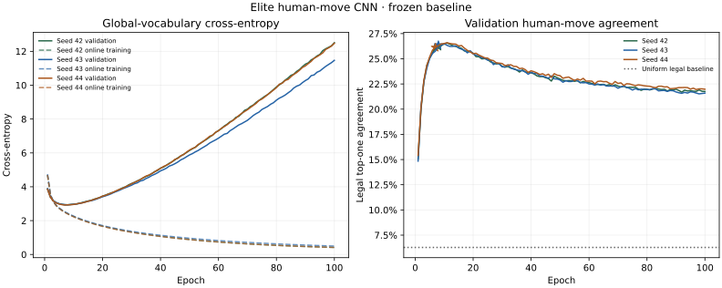

Completed baseline; experimental playable access enabled.
This independently implemented baseline follows the Skripkon PyTorch method: 13 absolute board planes, two convolution layers, a 256-unit dense layer and a complete 4208-class move vocabulary. Labels are moves actually played by humans, not Stockfish best moves.
The frozen dataset contains 800,000 training, 100,000 validation and 100,000 test examples from fresh elite games. Whole-game splits, position deduplication and prior-corpus/reserved-pool exclusions precede training. Each label is aligned to the board before its move.
Choose the highest-scoring legal move directly, without search. The original Supervised and Augmented Supervised models instead learn Stockfish position assessments and use alpha-beta. Policy probabilities rank legal move predictions; they are not winning chances or position evaluations.
Fresh seeds 42/43/44, FP32, Adam 0.0001, batch 64, gradient clipping 1.0, 100 epochs. Select minimum validation cross-entropy with earliest-epoch ties, seal all seed attempts, then evaluate held-out tests. Seed 42 remains representative. No architecture search follows these results automatically.
| Seed | Selected epoch | Test CE | Top one | Top three | Mean target rank | CPU export |
|---|---|---|---|---|---|---|
| 42 | 8 | 2.96556 | 25.70% 95% CI 25.32%–26.04% | 47.61% | 7.12 | pass |
| 43 | 8 | 2.95742 | 26.02% 95% CI 25.62%–26.40% | 47.46% | 7.12 | pass |
| 44 | 7 | 2.94613 | 25.90% 95% CI 25.52%–26.28% | 47.53% | 7.13 | pass |

Seed 42's paired validation difference from uniform legal selection is 19.57% to 20.36% (95% whole-game bootstrap).
Full metrics, whole-game intervals, failures, hashes and the validation gate are in aggregate evidence. Between-seed variation is distinct from whole-game bootstrap uncertainty. Human-move agreement does not establish playing strength or Elo.
All three seeds completed 100 epochs on one Secure Cloud RTX PRO 4500 Blackwell at US$0.72/hour. The rental lasted at most 2.799 hours including setup, benchmark, evaluation and backup. Elapsed compute is estimated at US$2.015; US$1.346 of pod and volume charges had posted at reconciliation, with billing still pending. The conservative new-run allowance is C$5.74, including conversion, fee/tax multipliers and C$1.50 storage/rounding allowance, below the C$12 cap. With C$10 reserved for previous/pending project spending, the cumulative operating envelope is C$15.74 against C$40, with C$10 contingency separate. Backups were verified before this run's pod and volume were removed. These estimates are not a final CAD invoice.
The reference input omits explicit turn, castling-right, en-passant, halfmove-clock and repetition planes. Complete histories still enforce legality and automatic draws. Experimental playable access requires correctness, CPU export parity and a positive lower 95% whole-game bound on validation top-one accuracy minus the uniform-legal baseline. It does not confer strength qualification.
No old model weights initialize this CNN. Historical Stockfish-policy, self-play and evolutionary studies remain separate.